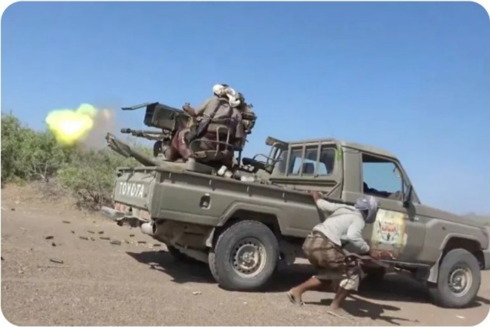
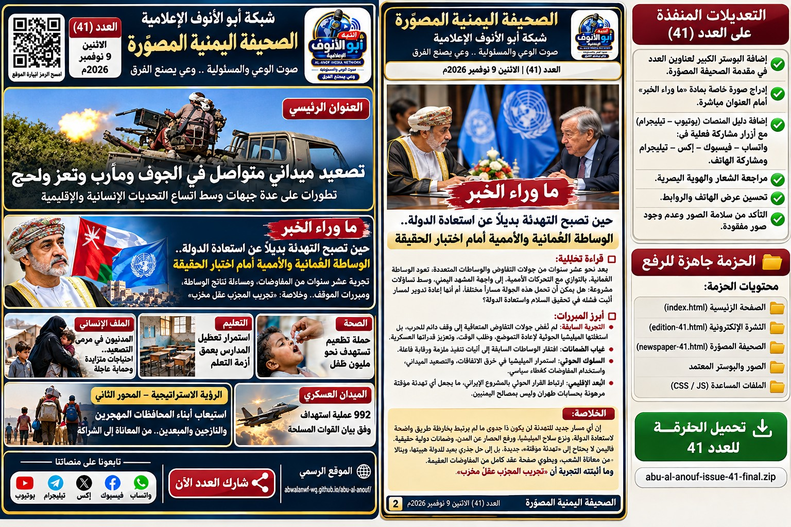
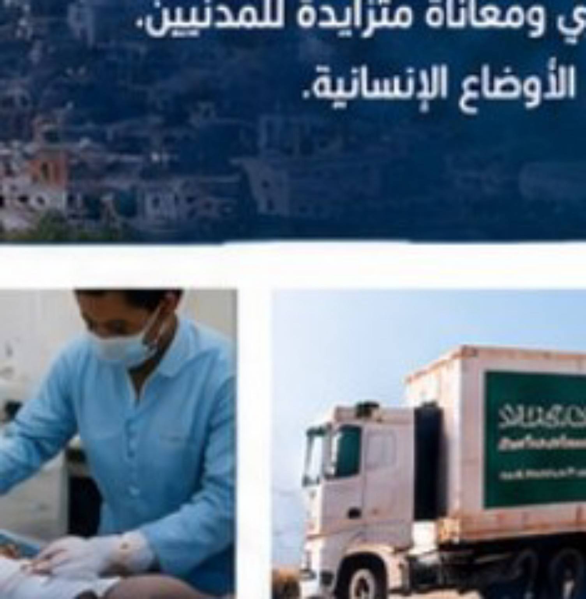
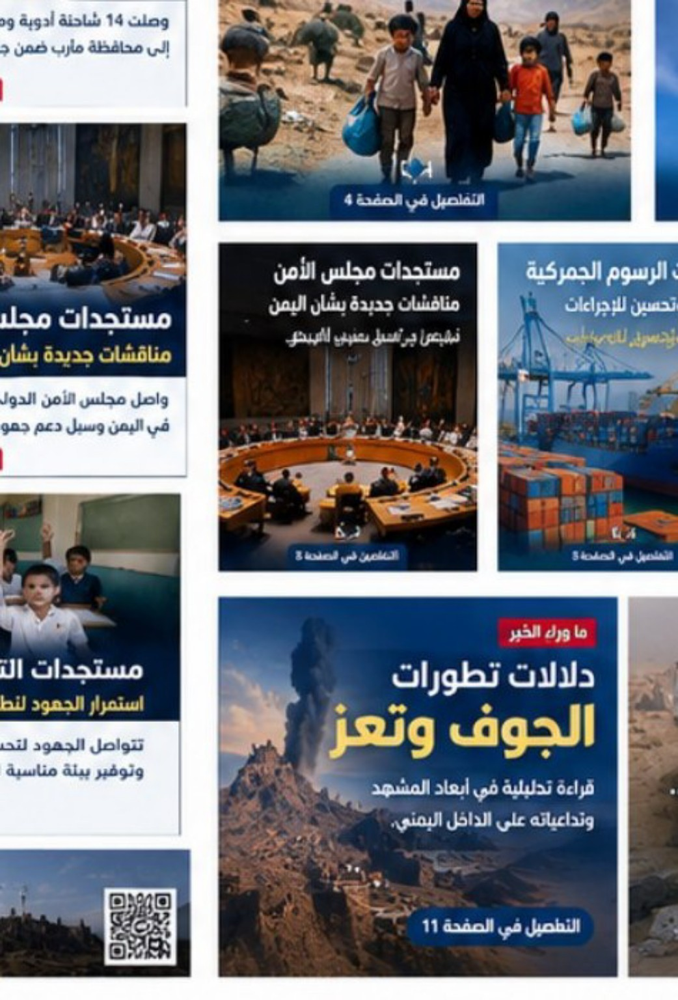
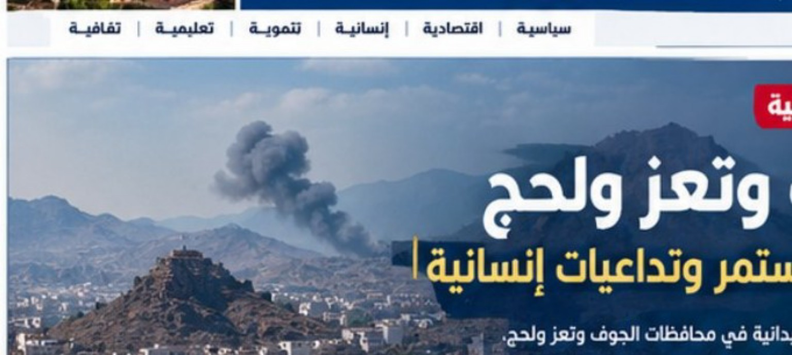
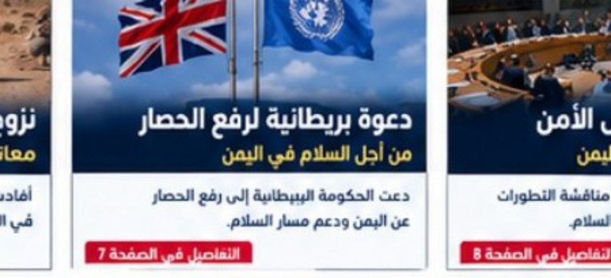
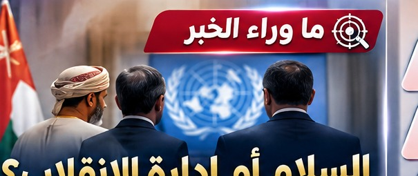
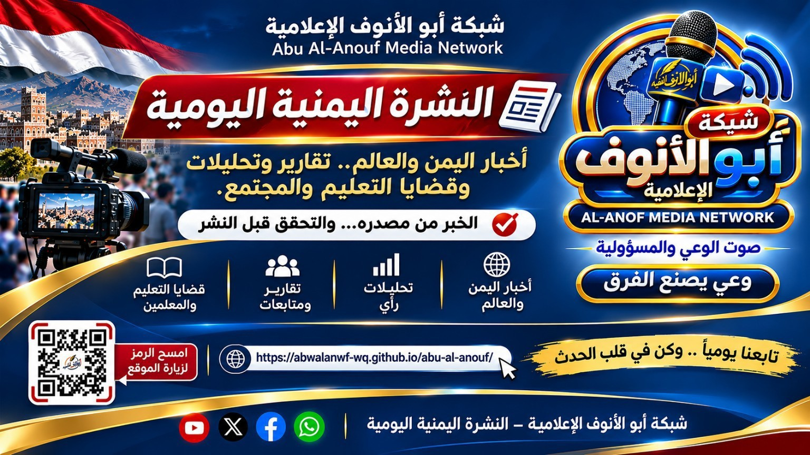

العنوان الرئيسي
تصعيد ميداني متواصل في الجوف ومأرب وتعز ولحج
تطورات على عدة جبهات وسط اتساع التداعيات الإنسانية والإقليمية

شبكة أبو الأنوف الإعلامية
صوت الوعي والمسؤولية — وعي يصنع الفرق
تطورات على عدة جبهات وسط اتساع التداعيات الإنسانية والإقليمية



أعلنت القوات الحكومية انتشار قواتها في مواقع بجبال كهبوب، كما نشرت مشاهد قالت إنها توثق استهداف مركبة عسكرية في جبهة المقاطرة بمحافظة لحج، وتُنسب المعلومات إلى الجهة المعلنة.
بحث المبعوث الأممي إلى اليمن مع وزير الخارجية العُماني تطورات اليمن وتداعيات التصعيد ومساعي استئناف المفاوضات.

أُعلن عن مقتل المصور الصحفي المستقل أثناء التغطية الميدانية في إحدى جبهات القتال جنوبي مأرب، وسط مطالبات بالتحقيق وحماية الصحفيين.
تحديات متراكمة تتطلب حماية المنشآت التعليمية، ودعم المعلمين، وضمان وصول الأطفال إلى التعليم الآمن.


تعود التحركات العُمانية والأممية إلى واجهة المشهد اليمني في وقت تتجدد فيه المواجهات على أكثر من جبهة. ففي 8 نوفمبر 2026 استقبل وزير الخارجية العُماني المبعوث الأممي إلى اليمن، وأُعلن بحث خفض التصعيد وتهيئة الظروف لاستئناف العملية السياسية، فيما تحدثت تقارير في 9 نوفمبر عن تحركات للمبعوث في مسقط واتصالات بشأن خارطة الطريق.
لكن السؤال الذي ينتظر اليمنيون إجابته ليس كم لقاءً عُقد، بل ما الذي سيتغير في حياتهم وعلى الأرض بعد هذه اللقاءات؟ فخلال نحو عشر سنوات من مسارات التفاوض، من الكويت إلى اتفاق ستوكهولم وجولات المبعوثين المتعاقبة، لم يتحقق الهدف الجوهري المتمثل في إنهاء الانقلاب واستعادة مؤسسات الدولة، بينما استثمرت المليشيا الحوثية الوقت لتعزيز سلطتها المسلحة وتكريس الأمر الواقع.
إن تجريب المسارات ذاتها دون مراجعة نتائجها يثير مخاوف مشروعة من أن تتحول التهدئة إلى إدارة مفتوحة للأزمة، بدلاً من أن تكون مدخلاً لحلها. كما أن الانتهاكات التي طالت موظفي الأمم المتحدة والعاملين الإنسانيين تستدعي موقفاً دولياً أكثر حزماً، وإجراءات واضحة تضمن عدم الإفلات من المساءلة.
ولا يعني ذلك رفض الوساطة العُمانية أو الأممية من حيث المبدأ، بل إخضاعها لاختبار النتائج والحياد والضمانات. فالوساطة الجادة ينبغي أن تتضمن جدولاً زمنياً معلناً، وآلية تحقق مستقلة، وضمانات لوقف الاعتداءات وحماية المدنيين وفتح الطرق وإطلاق المحتجزين ومنع تدفق السلاح.
والأهم أن تعالج أصل الأزمة: إنهاء الانقلاب، وتسليم السلاح الثقيل والمتوسط للدولة، واستعادة مؤسساتها، وتنفيذ المرجعيات والقرارات الدولية، وضمان مشاركة سياسية مدنية لا تمنح أي جماعة مسلحة سلطة موازية للدولة.
تجريب المجرّب عقلٌ مخرب؛ والسلام الذي لا ينهي أسباب الحرب ليس إلا تأجيلاً لجولة جديدة منها. ولا تُقاس الوساطة بعدد الاجتماعات ولا بعبارات الترحيب، بل بقدرتها على إنهاء الانقلاب واستعادة الدولة.
